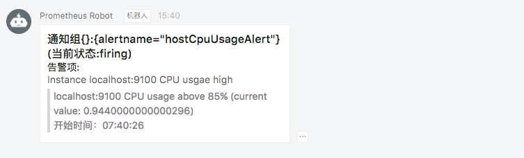

使用Webhook扩展Alertmanager
在某些情况下除了Alertmanager已经内置的集中告警通知方式以外，对于不同的用户和组织而言还需要一些自定义的告知方式支持。通过Alertmanager提供的webhook支持可以轻松实现这一类的扩展。除了用于支持额外的通知方式，webhook还可以与其他第三方系统集成实现运维自动化，或者弹性伸缩等。
在Alertmanager中可以使用如下配置定义基于webhook的告警接收器receiver。一个receiver可以对应一组webhook配置。
name: <string>
webhook_configs:
[ - <webhook_config>, ... ]
每一项webhook_config的具体配置格式如下：
# Whether or not to notify about resolved alerts.
[ send_resolved: <boolean> | default = true ]
# The endpoint to send HTTP POST requests to.
url: <string>
# The HTTP client's configuration.
[ http_config: <http_config> | default = global.http_config ]
send_resolved用于指定是否在告警消除时发送回执消息。url则是用于接收webhook请求的地址。http_configs则是在需要对请求进行SSL配置时使用。
当用户定义webhook用于接收告警信息后，当告警被触发时，Alertmanager会按照以下格式向这些url地址发送HTTP Post请求，请求内容如下：
{
"version": "4",
"groupKey": <string>, // key identifying the group of alerts (e.g. to deduplicate)
"status": "<resolved|firing>",
"receiver": <string>,
"groupLabels": <object>,
"commonLabels": <object>,
"commonAnnotations": <object>,
"externalURL": <string>, // backlink to the Alertmanager.
"alerts": [
{
"labels": <object>,
"annotations": <object>,
"startsAt": "<rfc3339>",
"endsAt": "<rfc3339>"
}
]
}
使用Golang创建webhook服务
首先我们尝试使用Golang创建用于接收webhook告警通知的服务。首先创建model包，用于映射ALertmanager发送的告警信息，Alertmanager的一个通知中根据配置的group_by规则可能会包含多条告警信息Alert。创建告警通知对应的结构体Notification。
package model
import "time"
type Alert struct {
Labels map[string]string `json:"labels"`
Annotations map[string]string `json:annotations`
StartsAt time.Time `json:"startsAt"`
EndsAt time.Time `json:"endsAt"`
}
type Notification struct {
Version string `json:"version"`
GroupKey string `json:"groupKey"`
Status string `json:"status"`
Receiver string `json:receiver`
GroupLabels map[string]string `json:groupLabels`
CommonLabels map[string]string `json:commonLabels`
CommonAnnotations map[string]string `json:commonAnnotations`
ExternalURL string `json:externalURL`
Alerts []Alert `json:alerts`
}
这里使用gin-gonic框架创建用于接收Webhook通知的Web服务。定义路由/webhook接收来自Alertmanager的POST请求。
package main
import (
"net/http"
"github.com/gin-gonic/gin"
model "github.com/yunlzheng/alertmanaer-dingtalk-webhook/model"
)
func main() {
router := gin.Default()
router.POST("/webhook", func(c *gin.Context) {
var notification model.Notification
err := c.BindJSON(¬ification)
if err != nil {
c.JSON(http.StatusBadRequest, gin.H{"error": err.Error()})
return
}
c.JSON(http.StatusOK, gin.H{"message": " successful receive alert notification message!"})
})
router.Run()
}
与钉钉集成
钉钉，阿里巴巴出品，专为中国企业打造的免费智能移动办公平台，提供了即时通讯以及移动办公等丰富的功能。
钉钉群机器人是钉钉群的高级扩展功能。群机器人可以将第三方服务的信息聚合到群聊中，实现自动化的信息同步。例如：通过聚合GitHub，GitLab等源码管理服务，实现源码更新同步；通过聚合Trello，JIRA等项目协调服务，实现项目信息同步。不仅如此，群机器人支持Webhook协议的自定义接入，支持更多可能性。这里我们将演示如果将Alertmanager运维报警提醒通过自定义机器人聚合到钉钉群。
这里将继续扩展webhook服务，以支持将Alertmanager的告警通知转发到钉钉平台。完整的示例代码可以从github仓库https://github.com/yunlzheng/alertmanaer-dingtalk-webhook中获取。
自定义webhook群机器人
通过钉钉客户端（如：桌面或者手机）进入到群设置后选择“群机器人”。将显示如下界面：

选择“自定义机器人”，并且按照提示填写机器人名称，获取机器人webhook地址，如下所示：

webhook机器人创建成功后，用户就可以使用任何方式向该地址发起HTTP POST请求，即可实现向该群主发送消息。目前自定义机器人支持文本(text)，连接(link)，markdown三种消息类型。
例如，可以向webhook地址以POST形式发送以下
{
"msgtype": "markdown",
"markdown": {
"title":"Prometheus告警信息",
"text": "#### 监控指标\n" +
"> 监控描述信息\n\n" +
"> ###### 告警时间 \n"
},
"at": {
"atMobiles": [
"156xxxx8827",
"189xxxx8325"
],
"isAtAll": false
}
}
可以使用curl验证钉钉webhook是否能够成功调用：
$ curl -l -H "Content-type: application/json" -X POST -d '{"msgtype": "markdown","markdown": {"title":"Prometheus告警信息","text": "#### 监控指标\n> 监控描述信息\n\n> ###### 告警时间 \n"},"at": {"isAtAll": false}}' https://oapi.dingtalk.com/robot/send?access_token=xxxx
{"errcode":0,"errmsg":"ok"}
调用成功后，可以在钉钉应用群消息中接收到类似于如下通知消息:

定义转换器将告警通知转化为Dingtalk消息对象
这里定义结构体DingTalkMarkdown用于映射Dingtalk的消息体。
package model
type At struct {
AtMobiles []string `json:"atMobiles"`
IsAtAll bool `json:"isAtAll"`
}
type DingTalkMarkdown struct {
MsgType string `json:"msgtype"`
At *At `json:at`
Markdown *Markdown `json:"markdown"`
}
type Markdown struct {
Title string `json:"title"`
Text string `json:"text"`
}
定义转换器将Alertmanager发送的告警通知转换为Dingtalk的消息体。
package transformer
import (
"bytes"
"fmt"
"github.com/yunlzheng/alertmanaer-dingtalk-webhook/model"
)
// TransformToMarkdown transform alertmanager notification to dingtalk markdow message
func TransformToMarkdown(notification model.Notification) (markdown *model.DingTalkMarkdown, err error) {
groupKey := notification.GroupKey
status := notification.Status
annotations := notification.CommonAnnotations
var buffer bytes.Buffer
buffer.WriteString(fmt.Sprintf("### 通知组%s(当前状态:%s) \n", groupKey, status))
buffer.WriteString(fmt.Sprintf("#### 告警项:\n"))
for _, alert := range notification.Alerts {
annotations := alert.Annotations
buffer.WriteString(fmt.Sprintf("##### %s\n > %s\n", annotations["summary"], annotations["description"]))
buffer.WriteString(fmt.Sprintf("\n> 开始时间：%s\n", alert.StartsAt.Format("15:04:05")))
}
markdown = &model.DingTalkMarkdown{
MsgType: "markdown",
Markdown: &model.Markdown{
Title: fmt.Sprintf("通知组：%s(当前状态:%s)", groupKey, status),
Text: buffer.String(),
},
At: &model.At{
IsAtAll: false,
},
}
return
}
创建Dingtalk通知发送包
notifier包中使用golang的net/http包实现与Dingtalk群机器人的交互。Send方法包含两个参数：接收到的告警通知结构体指针，以及Dingtalk群机器人的Webhook地址。
通过包transformer.TransformToMarkdown将Alertmanager告警通知与Dingtalk消息进行映射。
package notifier
import (
"bytes"
"encoding/json"
"fmt"
"net/http"
"github.com/yunlzheng/alertmanaer-dingtalk-webhook/model"
"github.com/yunlzheng/alertmanaer-dingtalk-webhook/transformer"
)
func Send(notification model.Notification, dingtalkRobot string) (err error) {
markdown, err := transformer.TransformToMarkdown(notification)
if err != nil {
return
}
data, err := json.Marshal(markdown)
if err != nil {
return
}
req, err := http.NewRequest(
"POST",
dingtalkRobot,
bytes.NewBuffer(data))
if err != nil {
return
}
req.Header.Set("Content-Type", "application/json")
client := &http.Client{}
resp, err := client.Do(req)
if err != nil {
return
}
defer resp.Body.Close()
fmt.Println("response Status:", resp.Status)
fmt.Println("response Headers:", resp.Header)
return
}
扩展启动函数
首先为程序添加命令行参数支持，用于在启动时添加全局的Dingtalk群聊机器人地址。
package main
import (
"flag"
...
"github.com/yunlzheng/alertmanaer-dingtalk-webhook/notifier"
)
var (
h bool
defaultRobot string
)
func init() {
flag.BoolVar(&h, "h", false, "help")
flag.StringVar(&defaultRobot, "defaultRobot", "", "global dingtalk robot webhook")
}
func main() {
flag.Parse()
if h {
flag.Usage()
return
}
...
}
同时通过notifier包的Send方法将告警通知发送给Dingtalk群聊机器人
func main() {
...
err = notifier.Send(notification, defaultRobot)
if err != nil {
c.JSON(http.StatusBadRequest, gin.H{"error": err.Error()})
}
c.JSON(http.StatusOK, gin.H{"message": "send to dingtalk successful!"})
}
使用Dingtalk扩展
运行并启动dingtalk webhook服务之后，修改Alertmanager配置文件, 为default-receiver添加webhook配置，如下所示：
receivers:
- name: default-receiver
email_configs:
- to: yunl.zheng@wise2c.com
webhook_configs:
- url: http://localhost:8080/webhook
重启Alertmanager服务后，手动拉高虚拟机CPU使用率触发告警条件，此时Dingtalk即可接收到相应的告警通知信息:
